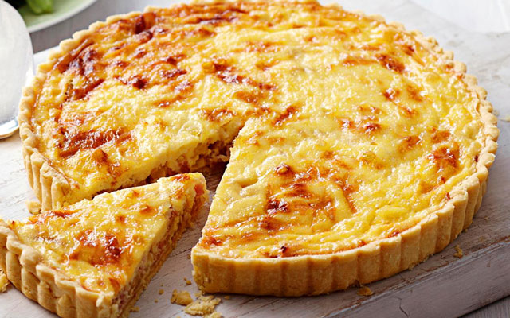

Ouiche Lorraine

It's a delicious way to start a meal!
- 1 recipe pastry for a 9 inch single crust pie
- 6 slices bacon
- 1 onion, chopped
- 3 eggs, beaten
- 1 ½ cups milk
- ¼ teaspoon salt
- 1 ½ cups shredded Swiss cheese
- 1 tablespoon all-purpose flour
- Preheat oven to 450 degrees F (230 degrees C).
- Line pastry with a double layer of aluminum foil. Bake in preheated oven for 8 minutes. Remove foil and bake for 4 to 5 minutes more, or until crust is set. Reduce oven temperature to 325 degrees F (165 degrees C).
- Place bacon in a large, deep skillet. Cook over medium high heat until evenly brown. Remove bacon from pan, crumble and set aside. Reserve 2 tablespoons bacon grease in skillet. Cook onion in reserved drippings until tender; drain and set aside.
- In a large bowl, mix together eggs, milk and salt. Stir in bacon and onion. In a separate bowl, toss cheese and flour together. Add cheese to egg mixture; stir well. Pour mixture into hot pastry shell.
- Bake in preheated oven for 35 to 40 minutes, or until knife inserted into center comes out clean. If necessary, cover edges of crust with foil to prevent burning. Let quiche cool for 10 minutes before serving.
Return to the list